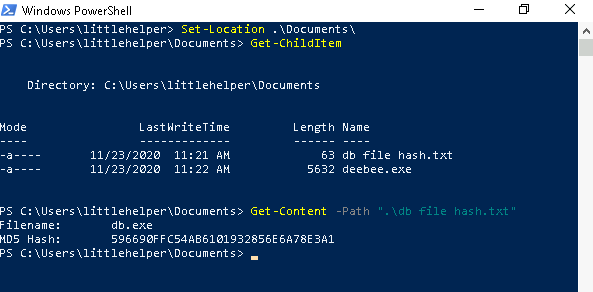
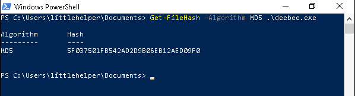
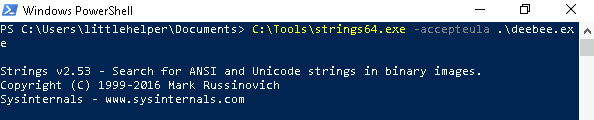
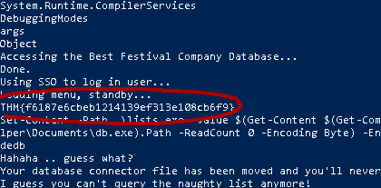
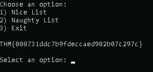

bolo@write-up:~$ cat Task.txt
One of the 'little helpers' logged into his workstation only to realize that the database connector file has been replaced, and he can't find the naughty list anymore. Furthermore, upon executing the database connector file, a taunting message was displayed, hinting that the file was moved to another location.McEager has been notified, and he will put the pieces together to find the database connector file.Note: All of the ips shown in this write-up will probably not be the same for you.
bolo@write-up:~$ cat settingUp.txt
Log in using remmina to get rdp ( Remote Desktop Protocol ) and open the powershell.
bolo@write-up:~$ cat 1.txt
Read the contents of the text file within the Documents folder. What is the file hash for db.exe ?Just browse to the Documents of littlehelper and read the content of the 'db file hash.txt'.
Answer: 596690FFC54AB6101932856E6A78E3A1
bolo@write-up:~$ cat 2.txt
What is the file hash of the mysterious executable within the Documents folder ?Here we will use the command that was given in the introduction to get the md5 hash of the asked file.
Answer: 5F037501FB542AD2D9B06EB12AED09F0
bolo@write-up:~$ cat 3.txt
Using Strings find the hidden flag within the executable ?Once more, use the command that was given in the introduction to use the string64.exe script that finds every combination of 3 or more valid ASCII character.
 Answer: THM{f6187e6cbeb1214139ef313e108cb6f9}
bolo@write-up:~$ cat 4.txt
What is the flag that is displayed when you run the database connector file ?We will have to first find the name of ADS and then run the deebee.exe executable using this ADS with the Windows Management Instrumentation command.
Answer: THM{088731ddc7b9fdeccaed982b07c297c}